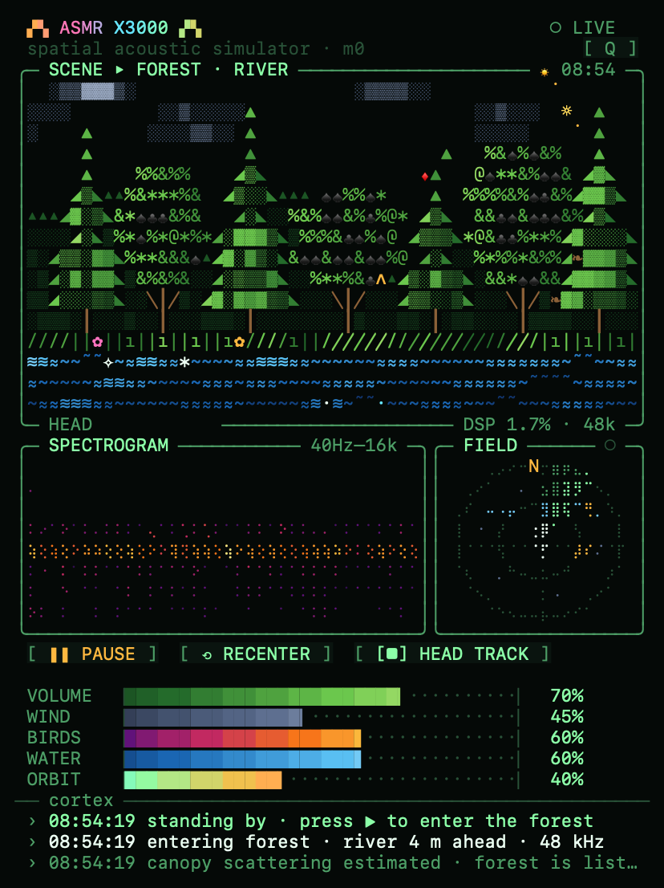

Not a looped recording. Wind gusts travel through the trees, a river bubbles bubble by bubble, birds sing from real positions in 3D — all simulated live, then rendered to your headphones with head-related binaural cues. On a Mac with AirPods, turning your head turns the world.
Water is synthesised from individual Minnaert bubbles, wind from a gust front sweeping across the scene, birds from procedural song with their own positions.
Everything is encoded into a 16-channel sound field, so the listener can be rotated after the fact — the same trick VR audio uses.
The field is decoded through an HRTF model to two ears. The macOS app reads AirPods motion sensors and rotates the field in real time.
The demo above runs the exact same Rust engine as the native app, compiled to WebAssembly and executed inside an AudioWorklet — no samples are downloaded. “Flat recording” plays the same scene as an ordinary fixed stereo mix: the head is locked and spatial width is collapsed, which is what a pre-recorded track gives you.

macOS menu bar app: animated ASCII console with spectrogram, sound-field radar and a live log of what the engine is doing.
git clone https://github.com/takimunk/asmrx3000 cd asmrx3000 scripts/build-macos.sh